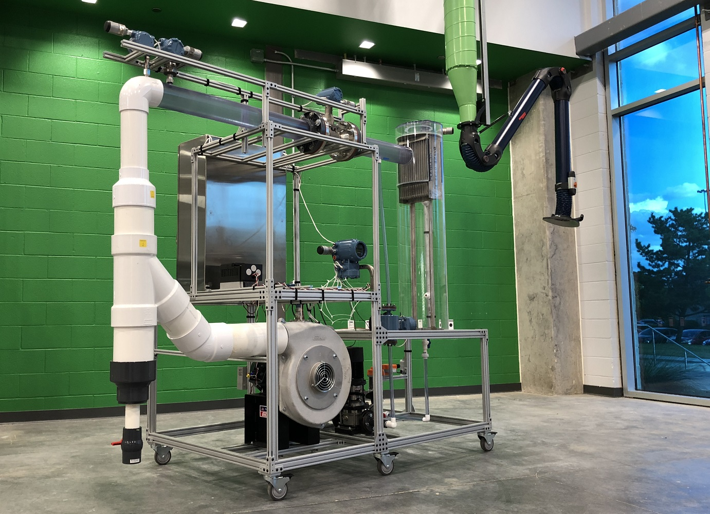

Ruths Lab Air Separator
Air Separator test bed used for reaserch in cyber-physical security of industrial control systems.
In our research we have devised mathematical tools to help quantify the impact an attacker can have on a control system. We use this process control system to demonstrate attacks, and also demonstrate the effectiveness of our tools to detect and mitigate such attacks.

General Doumentation
Credentials:
Username: Emerson
Password: DeltaVE1
PK Authentification: DeltaVE1
Charm Assignments
| Charm | Input / Output |
|---|---|
| CIOC-1/CHM1-01 (PKCTLR) | Temperature |
| CIOC-1/CHM1-02 (PKCTLR) | Pressure |
| CIOC-1/CHM1-03 (PKCTLR) | Air Flow |
| CIOC-1/CHM1-04 (PKCTLR) | Separator Level |
| CIOC-1/CHM1-05 (PKCTLR) | Water Flow |
| CIOC-1/CHM1-06 (PKCTLR) | Valve Command (A0) |
| CIOC-1/CHM1-07 (PKCTLR) | Raw Level |
| CIOC-1/CHM1-08 (PKCTLR) | Blower Ref Signal (A0) |
| CIOC-1/CHM1-09 (PKCTLR) | Blower Run (D0) |
| Not Connected: | |
| CIOC-1/CHM1-10 (PKCTLR) | Pump Ref Signal (A0) |
| CIOC-1/CHM1-11 (PKCTLR) | Pump Run (D0) |
| CIOC-1/CHM1-12 (PKCTLR) | Valve Status |
Useful References
Operating Testbed
This section provides an overview of operating the testbed and how to interact with the separator as an operator.
Pump manual setpoint: dot number 4 from bottum
General Overview of the DeltaV DCS
This section provides an overview of the DeltaV DCS and where to navigate the DeltaV project.
Configuring System and Managing IO (CHARMs)
This section provides information and instructions on configuring the system, specificyally CHARMs for input/output.
Configuring Controllers and Control Studio overview
This sections provides information and instructions about setting up control modules and modifying them using Control Studio.
Managing DeltaV Operate Interfaces
This sections provides information and instructions about configuring DeltaV Operate interfaces for interacting with the system.